鷲羽岳～水晶岳
| 日付 | 2023年8月14日（月） - 2023年8月19日（土） | ||||||||
|---|---|---|---|---|---|---|---|---|---|
| 山域 | 北アルプス | ||||||||
| メンバー | 家族（妻、長男・10歳） | ||||||||
| 山行形態 | 子連れ5泊6日旅館、山小屋、キャンプ泊 | ||||||||
| アクセス | 車 | ||||||||
| ルート (Map) |
|
6日目
朝6時に起床。本日も晴れそうだ。
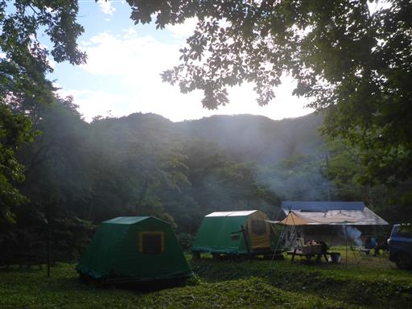
朝食後に、キャンプ場の近くにある平湯大ネズコを見に行く。
昨年から気になっていたのだが、昨年は雨続きで行くことができなかった。
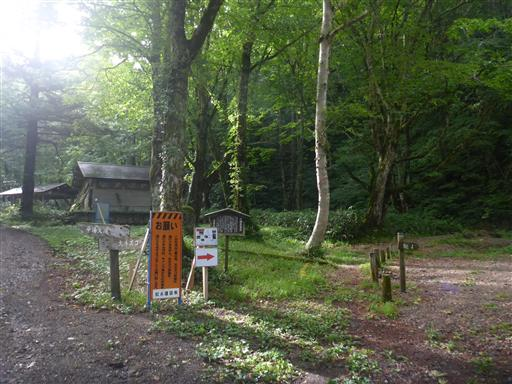
遊歩道と言うよりは登山道。傾斜もそこそこある。
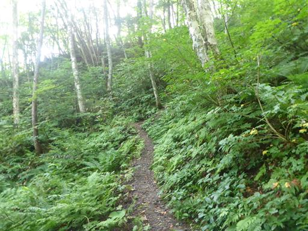
周囲は深い樹林帯だ。
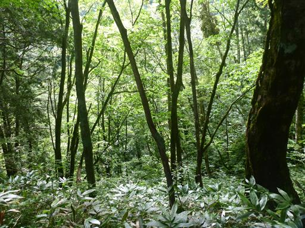
足元にセンジュガンピを発見。
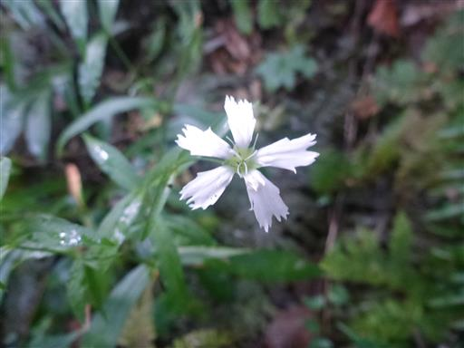
平湯大ネズコに到着。推定樹齢1000年。
見に来る価値のある巨木だ。
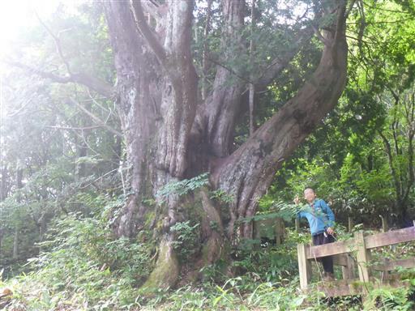
ぐるりと一周歩けるようになっている。葉はヒノキとよく似ている。
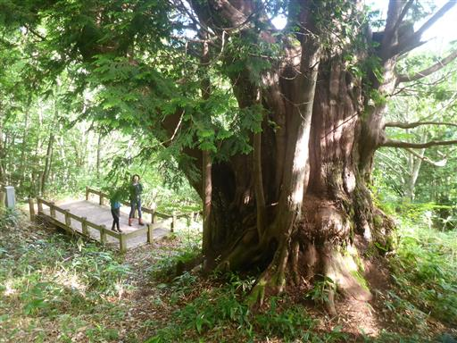
キャンプ場を撤収し、平湯大滝を訪れる。
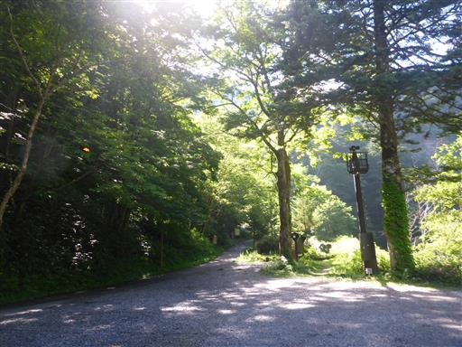
駐車場から少し歩くと滝が見えてくる。
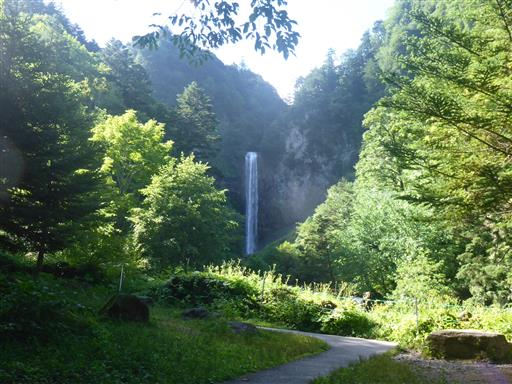
平湯大滝は8年振りの訪問。前回訪問時は息子は1歳で、さすがに覚えていない。
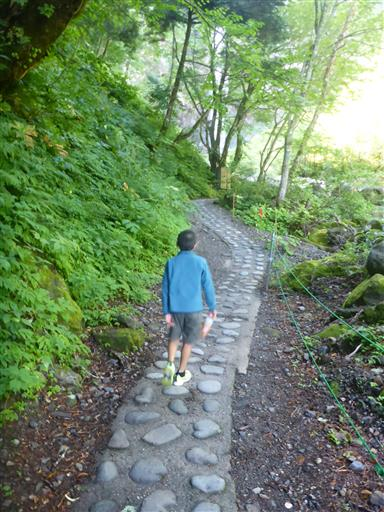
キツリフネの花が咲いている。
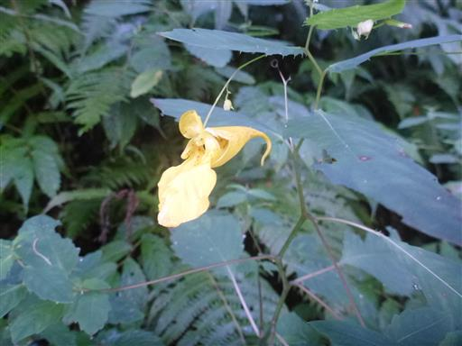
平湯大滝。落差64mの立派な滝だ。
解説板によると、溶岩の先端の崖にできた滝とのことだ。
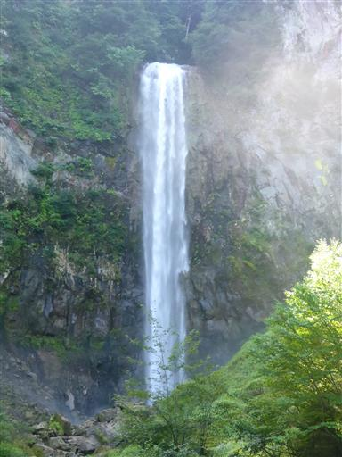
最後に安房トンネルを通らずに旧道を通って帰宅。
安房峠の展望台から穂高を眺める。奥穂高は残念ながら雲の中だ。
これで今回の旅行は終わり。あまり観光はできなかったが、
前後に下界で1泊を入れたため、比較的ゆっくりした旅行ができた。
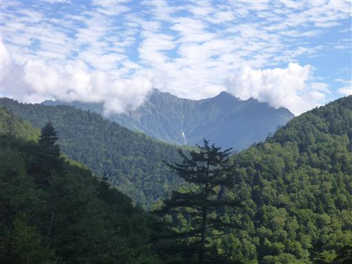
他の記録